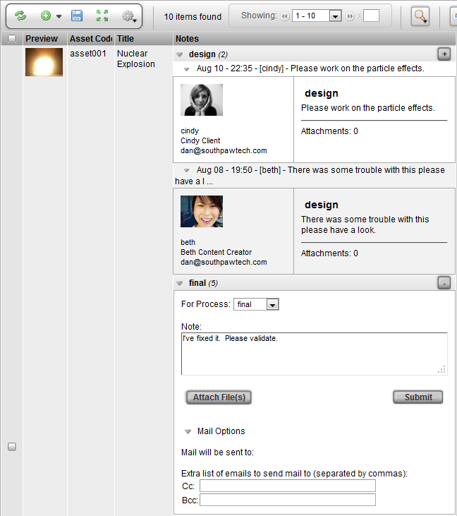

The Notes Widget provides the ability to add a note directly to an item in the view. The notes are tracked in chronological order and and are also grouped by process if entered against tasks. Other conveniences provided in this widget is the ability attach files and to CC/BCC extra email addresses when you submit the note.
If the Notes widget is not in the view, it can be added through the Column Manager.
To add a note, go to the Notes column and click on the plus sign in the top right corner.

The "For process:" drop down allows you to select the pipeline process to add the note to. If there is no pipeline for the item, then a default process will be used for the note.
The Submit button will save the note to the item.
To attach a file, click on the Attach File(s) button. The file browser will open to prompt to select a file.
Additional fields to input Cc or Bcc email addresses can be found at the bottom, under Mail Options.
Note
If Notification Triggers have been set up in the project, emails will automatially be sent to the appropriate users when notes are added. Adding a CC email address to a note simply sends the note to the email addresses regardless of Noification Triggers.